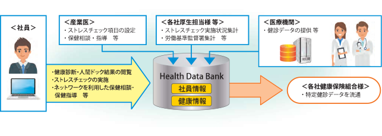
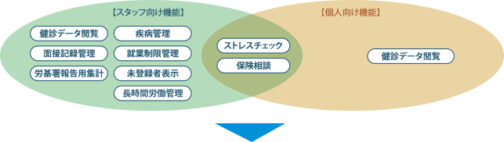

ヘルスデータバンクは、社員の皆さまの健康に関するデータ※を蓄積しお客様の継続的な健康経営をサポートするサービスです。
※フィジカル（健康診断結果等）、メンタル（ストレスチェック結果）両方のデータ
健康経営はじめませんか
2015年12月より ストレスチェックの実施が事業者の義務となりました！
ストレスチェック
ストレスに関する質問票を集計・分析することで、各自のストレスがどのような状況にあるのかを調べ、「うつ」などのメンタルヘルス不調を未然に防止するための仕組みです。
面接指導
高ストレスと医師に判断された本人が希望した場合、遅滞なく面接指導を実施する必要があります。
報告義務
ストレスチェックと面接指導の実施状況は、毎年、労働基準監督署に所定の様式で報告する必要があり、衛生委員会でストレスチェック制度に関する事項を調査・審議する必要があります。
集団分析【努力義務】
個人を特定できない一定規模ごとに集団分析を実施することが努力義務とされました。
働き方改革が始まる。 ～健康経営に向けて～
こんなお悩みかかえていませんか？
- 社員へのストレスチェックを効率的に実施したい
- 社員の健康状況（健康診断結果等）をデータベース化し、分析をしたい
- 社員のメンタルヘルス不調を未然に防ぎたい
- 厚生担当者の業務効率化、コスト削減をしたい
ヘルスデータバンクとは？
Health Data Bankは、企業の社員など個々人の健診データを管理し、健康管理等に役立ててもらうためのサービスです。（ストレスチェックにも対応済）
ヘルスデータバンクの主な機能
Health Data Bankは、保健スタッフだけでなく、従業員や被保険者個人への機能提供も可能であるため、コミュニケーションをとりながらの保健活動が可能となります。
導入後のメリット
- 様々な健診データ形式が存在しても変換による一元化・経年管理を実現
- 所見項目を含めた自動判定にて、管理対象者の抽出・集計を素早く実施
- 管理対象者の状態が一目でわかる強力な帳票サポート
- 豊富な事例で、お客様の健康管理フローの見直しからお手伝いが可能
NTTビジネスアソシエならできる３つのポイント！
POINT 1
クラウド型のため低コストかつスピーディーに導入できます。
POINT 2
健診データの受領・登録などの業務もサポートいたします。
POINT 3
セキュリティも万全！健診データは重要な個人情報です。

サイドナビエリアはここからです。